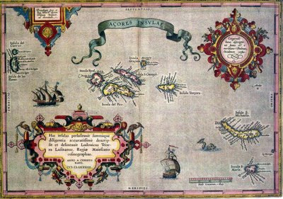

Badarg, the great pirate got his hands on a map of a treasure island. The island has a rectangular shape and it is full of treasures. Unfortunately he is not the only one who knows about the island so he has to hurry to get to the island first and then leave before others get there.

The map is a WxH sized grayscale image where each pixel gives the value of a treasure item hidden at that location.
Due to the ecomonic recession, Badarg has only a small boat and a small backpack so he can only carry 512 treasure items. He does not want to be on the island for more than a day and he can only walk about 4096 units distance a day. (1 pixel on the map is 1 unit)
So he will start from some X0,Y0 point which is on the border of the island and leave his boat there. Then he is going to visit a few locations on the island and pick up the treasures there. In the end he must go back to his boat.
Now he asks your help to prepare a treasure hunting plan for him, he even generously offers you the 1% of the looted treasures.
The input is a WxH sized grayscale png image. The value of each pixel is between 0 and 255.
The first line of the output must contain two integers, X0 Y0, the coordinates of the starting location on the border of the map.
The following lines must contain the X Y coordinates of the visited locations in order, where 0 <= X < W and 0 <= Y < H. At most 512 locations can be visited.
The distance is calculated by adding together the euclidean distance of the consecutive visited locations (including the distance from X0, Y0 to the first and last visited locations).
The maximum distance constraint will be checked with 0.1 unit tolerance.
Note that once an item is picked up somewhere, visiting the same location again Badarg won't find anything valuable there.
SCORE = 100*(1 - sqrt(1-SUM/MAXSUM))
SUM is the sum value of the picked up treasures. MAXSUM is the best solution submitted so far. The score is recalculated at regular time intervals.
0 13 4 13 4 10
Starting from the left side of the map two locations are visited. The walked distance is 12.